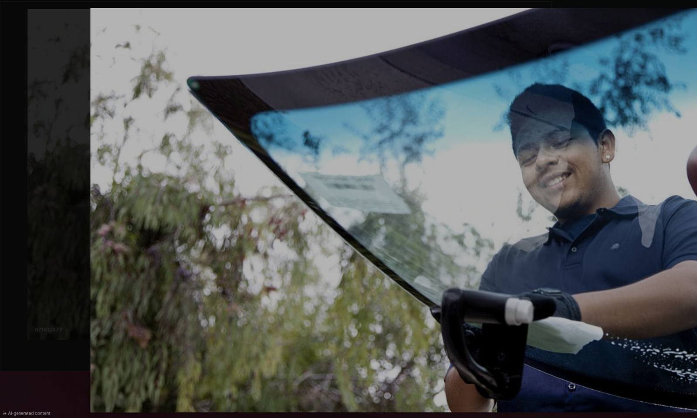

You should know who is coming to work on your car. Here is who they are.
Tell us about the damage. We'll get back to you.
Get My Free Quote OnlineFill out a short form and we call you back. Prefer to talk now? Call (509) 581-2623.
Tri-Cities Auto Glass connects drivers in Kennewick, Richland, Pasco, Prosser and Sunnyside with a local mobile auto glass business. When you call or send a request, our service partner, Precise Auto Glass LLC, handles your job.
Precise Auto Glass LLC is based in Sunnyside, WA. They come to your home, your job or wherever your car is parked.
They handle windshield replacement, chip repair and crack repair. Ask about other glass work when you call.
Look at their website and their Google listing. Read what their customers say.
It is simple. You are about to let someone work on a safety part of your car. You should know the name of the business doing it.
When you call (509) 581-2623, you reach us and we send your request to our partner. Ask anything you want before you book. That includes the glass, the price and the warranty. Our questions to ask before you book can help.
Not sure what your damage needs? Describe it over the phone and we will tell you straight.
☎ (509) 581-2623
Call for a free quote. We'll tell you exactly what it costs and how fast we can get to you. Ask any question you want before you decide.
☎ Call Now — (509) 581-2623